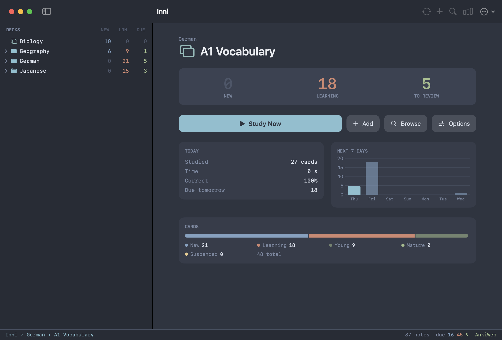
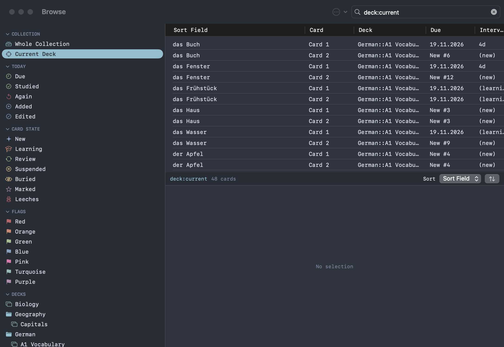
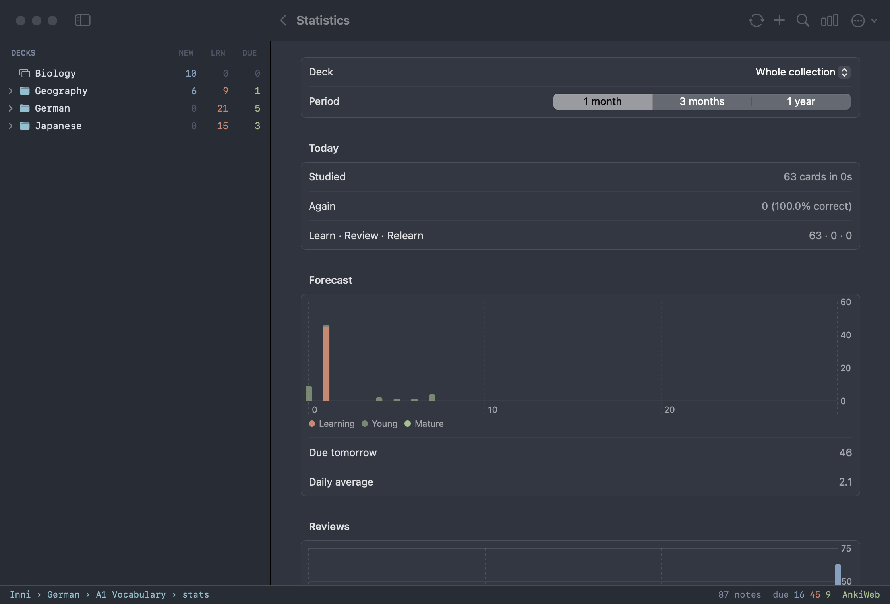
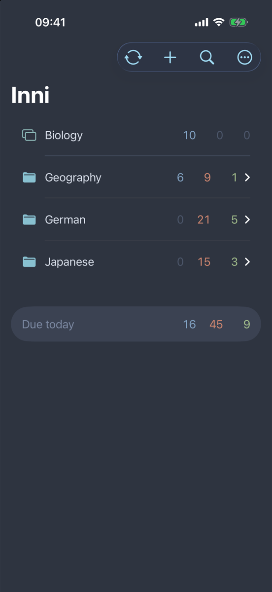
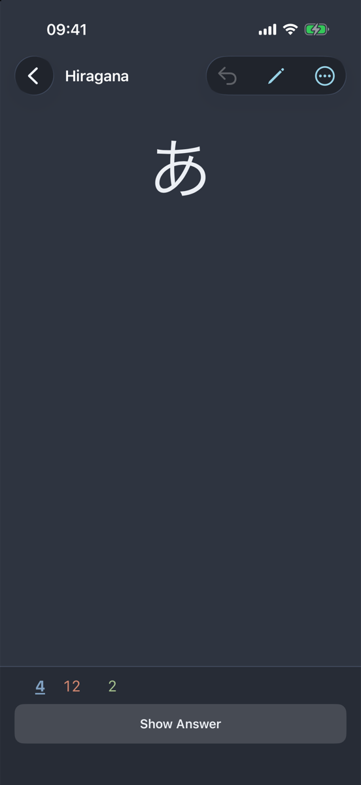
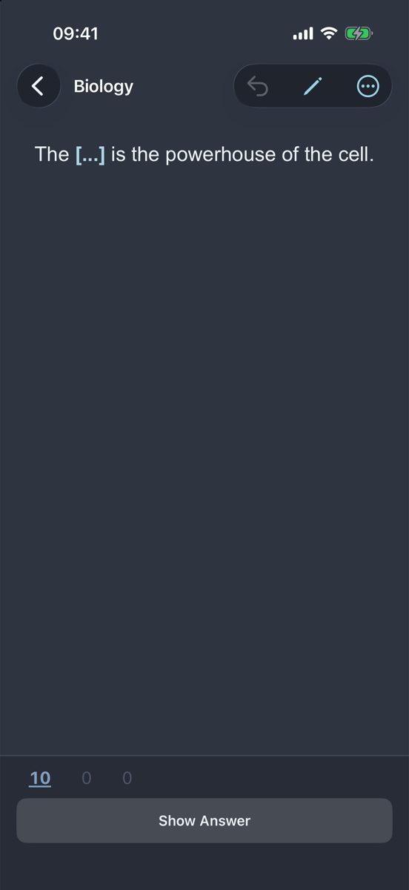
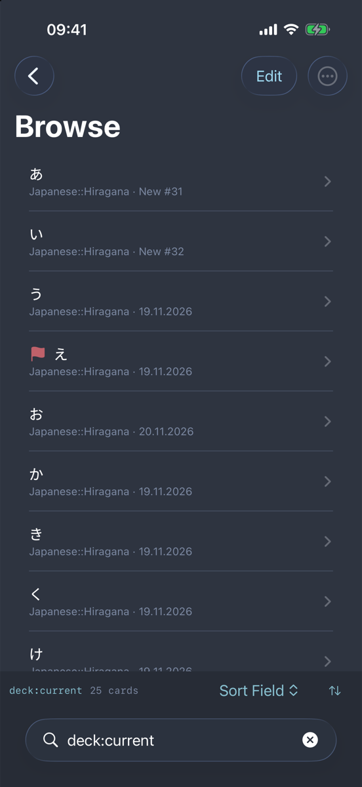
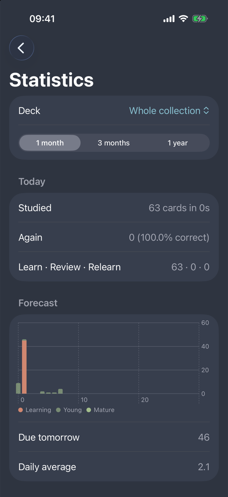

Anki-compatible flashcards for Mac and iPhone.
Inni opens your Anki collection as it is, schedules it the way Anki does and syncs through AnkiWeb, so you can switch between Inni, Anki, AnkiDroid and AnkiMobile at any time. Native Swift, no dependencies, about 30 MB of memory.
Apple Silicon · macOS 15 or later · iPhone build from source

Anki's features on Anki's files, in a layout that gets out of the way.
Reads and writes collection.anki2 in schema 18, the format of current Anki, and upgrades older files. On the Mac it can open an Anki profile in place while Anki is closed.
The v3 scheduler with SM-2 or FSRS-6: learning steps, fuzz, daily limits that cascade down the deck tree, sibling burying, leeches and undo. FSRS parameters trained in Anki are used as they are.
Sync protocol 11, the one current Anki uses: two-way merges of notes, cards, review history and deletions, one-way sync when needed, and media. Works with a self-hosted sync server too.
Anki's template language: conditionals, filters, cloze, type-in answers, hints, furigana and TTS, with the stock note types' exact templates and styling.
Imports and exports .apkg (current and legacy) and .colpkg. Re-importing a deck merges by note, so nothing is duplicated.
Anki's search syntax (deck:, tag:, is:due, prop:ivl>10, rated:7, regex) with a sidebar of decks, note types, tags, flags and card states, and bulk actions.
Add and edit notes with cloze shortcuts, sticky fields, images and audio. Edit note types: rename and reorder fields without losing content.
Today's numbers, a forecast, review history, retention and the card mix, per deck or for the whole collection.
The test suite runs the real Anki backend on the same collections: due counts, rendered cards, FSRS states and intervals must match, and Anki must accept every file Inni writes.
About 30 MB of memory and no CPU while idle. One backup a day, plus one before every full download.
A demo collection: German, Japanese, capitals and a little biology.







On the Mac everything is a keystroke away. The basics:
With Homebrew:
brew install --cask asahium/tap/inni
Or by hand:
.dmg from releases.xattr -dr com.apple.quarantine /Applications/Inni.app
To use your Anki profile, open ~/Library/Application Support/Anki2/<profile>/collection.anki2 with Anki closed, or sign in to AnkiWeb and download.
Xcode 16 or newer, no third-party dependencies.
git clone https://github.com/asahium/inni cd inni make run # build and open make test # unit tests make ios-device # iPhone build, free Apple ID